Day 0, Hour 18
If I am to investigate the phenomenon that's currently befalling Unova, I need to properly understand how the Pokémon have adapted to it, or rather how said phenomenon caused them to evolve.
He wouldn't understand, of course. But to chose to ignore or dismiss it would be disrespectful to those Pokémon.
If I am to investigate the phenomenon that's currently befalling Unova, I need to properly understand how the Pokémon have adapted to it, or rather how said phenomenon caused them to evolve.
He wouldn't understand, of course. But to chose to ignore or dismiss it would be disrespectful to those Pokémon.
Cherubi
"Wonder Cherry"
Over time, their aroma has mutated into a light-bending veil that makes them virtually impervious to harm. The more of them gather, the more their veils fill with glowing colors and flaring sparks. Sadly, their taste is so delicious that the vast majority of their predators have completely adapted to it, and their regenerative abilities prove useless as they always get devoured to the very last crumb.
"Wonder Cherry"
Over time, their aroma has mutated into a light-bending veil that makes them virtually impervious to harm. The more of them gather, the more their veils fill with glowing colors and flaring sparks. Sadly, their taste is so delicious that the vast majority of their predators have completely adapted to it, and their regenerative abilities prove useless as they always get devoured to the very last crumb.
Vanillite
"Cursellite Cream"
The highly alcoholic substance that makes up its body confers it with a disproportionate amount of strength. It likes to draw attention by pretending to be hurt, but the smell of its tears is so strong that it'll make anyone pass out; this earned it the nickname of "curse-flavored cream", even though it means no harm. It is customary to adorn it with a paper umbrella to make it more recognizable.
"Cursellite Cream"
The highly alcoholic substance that makes up its body confers it with a disproportionate amount of strength. It likes to draw attention by pretending to be hurt, but the smell of its tears is so strong that it'll make anyone pass out; this earned it the nickname of "curse-flavored cream", even though it means no harm. It is customary to adorn it with a paper umbrella to make it more recognizable.


Fake Tears
Nincada
[REDACTED]
Although their morphology is fit for living in the depths of dark-lit woods, their limited combat abilities caused members of this species to gradually move closer to cities. Thanks to their highly-developed mental capacities and fast typing speed, they prove to be surprisingly skilled technicians. However, they tend to lack organizational skills, meaning they will often lose track of their previous work.
 Addendum: REDIRECT: DATA STORED IN [individuals.arch]
Addendum: REDIRECT: DATA STORED IN [individuals.arch]
[REDACTED]
Although their morphology is fit for living in the depths of dark-lit woods, their limited combat abilities caused members of this species to gradually move closer to cities. Thanks to their highly-developed mental capacities and fast typing speed, they prove to be surprisingly skilled technicians. However, they tend to lack organizational skills, meaning they will often lose track of their previous work.

Solosis
"Soloseed"
They let themselves be freely carried by the wind, leaving a trail of sweet aroma behind them. At the mercy of wind currents, they look as if they are dancing through the sky. When they reach a host fit for pollination, they psychically latch onto it and start leeching its life force away; when the host if sufficiently drained, it can be made to produce new seeds, perpetuating the cycle.
"Soloseed"
They let themselves be freely carried by the wind, leaving a trail of sweet aroma behind them. At the mercy of wind currents, they look as if they are dancing through the sky. When they reach a host fit for pollination, they psychically latch onto it and start leeching its life force away; when the host if sufficiently drained, it can be made to produce new seeds, perpetuating the cycle.
Abra
"Solosalis"
Once the seed has absorbed enough nutrients, it grows inside its membrane, stretching the latter before it hardens into a diamond-like chrysalis. Completely immobile, it creates bursts of winds with its mind to move around at high speeds, but cannot see where it's going; because it spends its time psychically polishing its shell, its edges are so sharp that anything it collides with is instantly sliced in half.
"Solosalis"
Once the seed has absorbed enough nutrients, it grows inside its membrane, stretching the latter before it hardens into a diamond-like chrysalis. Completely immobile, it creates bursts of winds with its mind to move around at high speeds, but cannot see where it's going; because it spends its time psychically polishing its shell, its edges are so sharp that anything it collides with is instantly sliced in half.
Gothitelle
"Gothiclus"
After growing into a humanoid-like pluricelular organism, it breaks out of its chrysalis by making it crumble to dust, then proceeds to consume it. Its body is then able expurgate it at will, but it must ingurgitate it again afterwards. If one is seen dancing, it must be avoided at all costs; it is likely trying to lure a prey to latch onto with its hidden teeth, in order to replace the mineral nutrients it lost.
"Gothiclus"
After growing into a humanoid-like pluricelular organism, it breaks out of its chrysalis by making it crumble to dust, then proceeds to consume it. Its body is then able expurgate it at will, but it must ingurgitate it again afterwards. If one is seen dancing, it must be avoided at all costs; it is likely trying to lure a prey to latch onto with its hidden teeth, in order to replace the mineral nutrients it lost.
NOT_FOUND_ERROR: SOME DATA WAS MOVED TO [SECTION: INVESTIGATION_REPORT]
Nincada
[REDACTED]
The Nincada who is helping me with this archiving project is currently located in a place where she is very unlikely to be found and from where she is best able to work on it. However, there is also a very real risk involved with said location. To protect her, I have decided to remove her name from these reports, and simply refer to her as "Nincada".
[REDACTED]
The Nincada who is helping me with this archiving project is currently located in a place where she is very unlikely to be found and from where she is best able to work on it. However, there is also a very real risk involved with said location. To protect her, I have decided to remove her name from these reports, and simply refer to her as "Nincada".
Luxray
"Lord Good Night"
This incarnation of the Claw Fossil is the highest-ranking divinity of its Pantheon. According to myths, it is a patron of silent nights, who wields a blade made of lightning and a whip made of wood to strike down the nightmares and creatures that lurk in the dark until morning. Children are often taught not to fear stormy nights, as they are a sign that it is standing guard to protect them in their sleep.
"Lord Good Night"
This incarnation of the Claw Fossil is the highest-ranking divinity of its Pantheon. According to myths, it is a patron of silent nights, who wields a blade made of lightning and a whip made of wood to strike down the nightmares and creatures that lurk in the dark until morning. Children are often taught not to fear stormy nights, as they are a sign that it is standing guard to protect them in their sleep.
Shaymin
"Lord Parasol"
This minor deity is associated with survivalism; his body has adapted into a fertile ecosystem on which any plant can flourish, despite him being nocturnal and mostly sticking to shady areas. The roses on his back react violently towards aggressors, emitting burst of toxins that can cause burning rashes and short-term monoplegia. His head is filled with poisonous goo that he regurgitates to fend off predators, but also to attract mates.
"Lord Parasol"
This minor deity is associated with survivalism; his body has adapted into a fertile ecosystem on which any plant can flourish, despite him being nocturnal and mostly sticking to shady areas. The roses on his back react violently towards aggressors, emitting burst of toxins that can cause burning rashes and short-term monoplegia. His head is filled with poisonous goo that he regurgitates to fend off predators, but also to attract mates.

"The Night Pantheon"
Day 3, Hour 14
Opelucid City is mass-producing Helix Fossils to sell them?
Are the Elesa twins behind this very open black market operation?
Is this related to why the new King of Team Palsma came to visit the city?
This is all very concerning, but not necessarily linked to the rest of my investigations.
Opelucid City is mass-producing Helix Fossils to sell them?
Are the Elesa twins behind this very open black market operation?
Is this related to why the new King of Team Palsma came to visit the city?
This is all very concerning, but not necessarily linked to the rest of my investigations.
